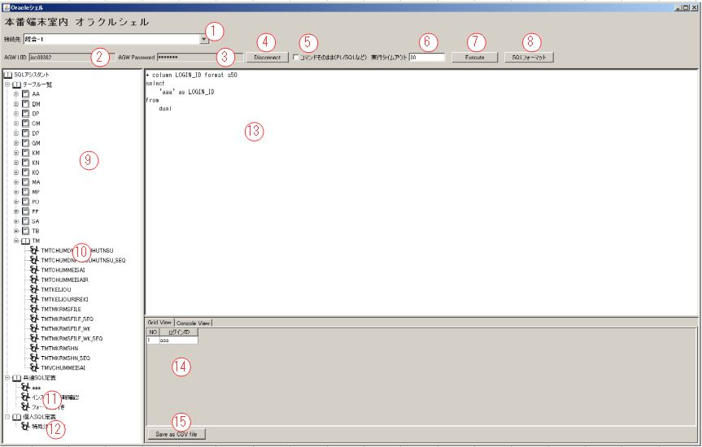
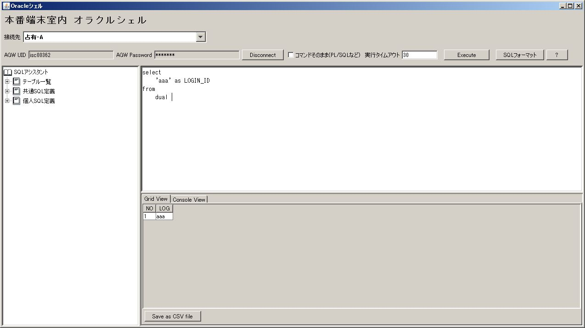

SQLテキストで最初からの"+ "で始まる行はフォーマット文字として認識し、そのままサーバに転送される。
▼サンプル
+ column LOGIN_ID format a50
select
'aaa' as LOGIN_ID
from
dual
チェック・整形ルール
&変数名 が見つかった場合、変数入れ替えダイアログを表示し、入力した変数値でSQLを入れ替えする。INSERT|DELETE|UPDATE|PURGE|DROP|ALTER|EXECUTE|CREATE|TRUNCATE|COMMIT|BEGIN|ENDがSQLに存在するかを
チェック、存在する場合、警告メッセージを表示し、実行を諦める。;で終了する場合、;を削除する。SQLはselect *で始まる場合、下記のように変更する。
select '########' as \"%%%%%%%%\", t_t_t_t_t_t_t_t.* from (元のSQL) t_t_t_t_t_t_t_t
SQLはselectで始まる場合、下記のように変更する。
select '########' as \"%%%%%%%%\"," + 元のSQLでselectを抜いた部分
selectで始まってない場合、エラーとして、警告メッセージを表示し、、実行を諦める。※「5. 特殊SQL発行チェックボックス」がチェックされた場合、「2.」からのチェックが発生しない。
タイムアウトについて
SQL実行タイムアウト
大量データを出力されるSQLが実行される場合、長時間大量なネット通信で障害に及ぶことが考えられるので、 SQLが発行されてから実行終了までタイムアウトが設定される。
[CTRL]+Cが送られる。ログインタイムアウト
セキュリティの理由で、DBに接続して、長時間で操作しないと、自動ログアウトする。
SQL文が実行され、「14. SQL実行結果ボックス」に結果を表示されるが、列名はSQL文発行されたままになる。 SQL文で取得したコラム名を自動に人間に読みやすい形に変換することでユーザに役立つ。
自動変換ファイルについて、下記のパスにおかれる。
ソフトインストールパス\fieldname.csv
フォーマットは SQLコラム名,表示用コラム名 である。
▼サンプル
TUSK,証券会社コード
LOGIN_ID,ログインID
コラムサイズについて
本ツールのバックグランドはSQLPLUSですので、SQLPLUSが実データの表示幅にあわせ、コラムタイトルを一部消すことがある。 これを回避するため、コラムサイズを強制指定できる。
▼サンプル
select
'aaa' as LOGIN_ID
from
dual
コラムLOGIN_IDは8文字分が必要、データ'aaa'は3文字のみ、通常、下記のような結果になる。

▼サンプル
+ column LOGIN_ID format a8
select
'aaa' as LOGIN_ID
from
dual
コラムLOGIN_IDのサイズを8文字に固定して、日本語ログインIDに変換される。

コードはインストールディレクトリ\config\DBConnect.groovyのstatic Closure getCreateSqlPlusConnectClosure()に定義される。
ログインするときの手続き定義
appendAsLogon(builderName: "root") {
talk(
//ログイン完了した場合、テーブル一覧を取得する。
prepareLines: "select '######' || table_name || '######' from cat where substr(table_name, 1, 2) not in ('AQ', 'QT') order by 1;"
) {
//"Host name:"を受信できるまで待ち、接続先ホスト名を送信
wait(~/Host name:/)
send(attr.hostname)
//"Username:"を受信できるまで待ち、認証プロキシユーザIDを送信
wait(~/Username:/)
send("?{AGW_UID}")
//"Password:"を受信できるまで待ち、認証プロキシユーザパスワードを送信
wait(~/Password:/)
password("?{AGW_PWD}")
//"login:"か"Username:"を受信できるまで待ち、"login:"を受信できたら、OSユーザIDを送信
//"Username:"を受信できたら、エラーで終了する。
wait(~/login:/) {
error(~/Username: *$/, [error: "Audit gateway login failed with ?{AGW_UID}"])
}
send(attr.osUid)
//"Password:"を受信できるまで待ち、OSユーザパスワードを送信
wait(~/Password:/)
send(attr.osPwd)
//コマンドPromptを待ち、しかし、"Password:"を受けたら、エラーで終了する。
wait(~/\]\$/) {
error(~/^ *Password: *$/, [error: "OS login failed with aplusr01"])
}
//SQLPLUSを起動する。
send("sqlplus -L ${attr.oraUid}/${attr.oraPwd}" as String)
//コマンドPromptを待ち、着たら、ページサイズを送信する。
wait(~/^ *SQL> *$/)
send("set pagesize 10000")
//コマンドPromptを待ち、着たら、行サイズを送信する。
wait(~/^ *SQL> *$/)
send("set linesize 10000")
//コマンドPromptを待ち、着たら、項目分割文字を送信する。
wait(~/^ *SQL> *$/)
send("set colsep '<#>'")
//コマンドPromptを待ち、着たら、ログインできるとする、次は子処理（テーブル一覧取得）
finish(~/^ *SQL> *$/, [result: TalkResult.FORWARD])
//ログイン完了後、テーブル一覧の登録処理
regex(
matchedResult: TalkResult.CONTINUE,
pattern: ~/^######.*######$/,
processor: { GraphicSqlTerminal.controller.tableNameList << it[6..-9] })
//ログイン完了後、テーブル一覧取得も終わって、コマンドPromptが出るを待ち、本手続き完了
regex(matchedResult: TalkResult.STOP, pattern: ~/^ *SQL> *$/)
}
}
ログアウトするときの手続き定義
appendAsLogoff(
builderName: "root",
prepareLines: ""
) {
talk(
unlessResult: TalkResult.STOP
) {
wait(~/^ *SQL> *$/)
send("exit")
wait(~/\$/)
send("exit")
send("exit")
finish(~/Host name:/, [result: TalkResult.STOP])
}
}
オラクルSelectコマンドを発行するときの結果処理
※環境に応じて修正がほぼない。
appendAsSelect(builderName: "oracleSelect") {
// タイトル処理コントロールを設定
appendAsTitle(builderName: "oracleTitle")
// データ行処理コントロールを設定
appendAsRowdata(builderName: "oracleRowdata")
// コマンドPromptが出ると、データ全量取得完了とされる。
regex(matchedResult: TalkResult.STOP,
pattern: ~/^ *SQL> *$/)
}
実行キャンセル処理 ※環境に応じて修正がほぼない。
appendAsCancel(builderName: "root") {
talk(
unlessResult: TalkResult.STOP
) {
// Ctrl+Cを送る。
raw(ControlCode.CTRL_C)
}
}
Select以外のコマンド実行処理 ※環境に応じて修正がほぼない。
appendAsExecute(builderName: "root") {
talk {
// コマンドPromptが出ると、実行完了とされる。
finish(~/^ *SQL> *$/, [result: TalkResult.STOP])
}
}
エラー終了の場合の後方付け ※環境に応じて修正がほぼない。
appendAsReset(prepareLines: "aaa", builderName: "root") {
talk(
unlessResult: TalkResult.STOP
) {
raw(ControlCode.CTRL_D)
raw(ControlCode.CTRL_D)
}
}
コードはインストールディレクトリ\config\Config.groovyに定義される。
GraphicSqlTerminal.controller = new ConfigBuilder().gst(
timeoutSecond: 30000, // ログインして、操作しないの自動ログアウト時間（秒）
transTimeoutSecond: 30, // SQL実行タイムアウト初期値
proxyHost: "192.177.237.211", // 認証プロキシーホスト名
proxyPort: 23, // 認証プロキシーポート番号
rawSqlEnabled: true, // Select以外のSQL文発行可能か（本番の場合：false）
fieldNameMappingPath: new File("fieldname.csv") // 項目のSQL名称と表示名称のマッピングCSV
) {